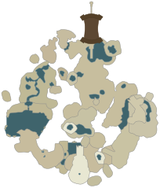

Hướng dẫn chơi từ A đến Z

Dành cho người mới (gà mờ). Từ điều khiển, cơ chế, hướng dẫn Great Sky Island đến 23 nhiệm vụ chính, 5 Đền thờ + Boss, Cuối game và mẹo 100%.
🚀 Quick Start (5 bước đầu)
- Hoàn thành Great Sky Island → học 4 năng lực (Ultrahand, Fuse, Ascend, Recall) → nhảy xuống Hyrule.
- Đến Lookout Landing → gặp Purah → nhận Paraglider.
- Nhận ngựa tại New Serenne Stable, kích hoạt Skyview Tower (Lindor's Brow).
- Làm Rito Village (Wind Temple) đầu tiên → nhận Tulin.
- Theo Robbie → Depths → học Autobuild.
📚 Mục lục
🖼️ Ảnh minh họa
Ảnh lấy từ Wikimedia Commons (CC/public domain) và liên kết đến Zelda Dungeon Wiki (1300+ screenshot).
